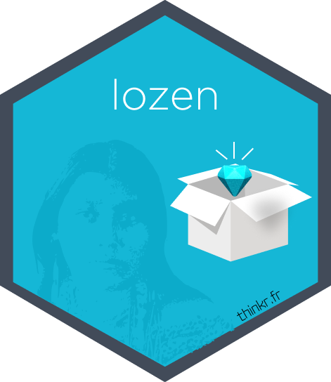

Move Issues from GitLab to GitHub
move_issues_from_gitlab_to_github.RdMove Issues from GitLab to GitHub
Usage
move_issues_from_gitlab_to_github(
gitlab_url = "https://gitlab.com/",
github_url = "https://github.com/",
gitlab_group,
gitlab_repo,
gitlab_project_id,
github_owner,
github_repo,
gitlab_private_token = Sys.getenv("GITLAB_TOKEN"),
github_token = NULL,
sleep_time = 60,
issue_start_over = 1,
max_page = 10,
force = FALSE
)Arguments
- gitlab_url
GitLab instance URL
- github_url
GitHub URL, default to <github.com>
- gitlab_group
group name. Can be sub-group with "group/sub-group" format
- gitlab_repo
Repo name on GitLab
- gitlab_project_id
Repo ID on GitLab
- github_owner
Owner of the project on GitHub
- github_repo
Repo name of the project on GitHub. It should already exists.
- gitlab_private_token
GitLab Token with API permissions
- github_token
GitHub token. If NULL, will search for
GITHUB_PATin your env. variables- sleep_time
Time in second to wait between each set of 5 issues. This is to reduce risk of being banned by GitHub. If you have time, Set to 60s by default.
- issue_start_over
For debug. Number of the issue in GitLab to start over with in case of temporary ban by GitHub.
- max_page
Maximum number of pages of issues to retrieve from GitLab.
- force
Whether to force writing issue to GitHub, even if issue numbers mismatch with GitLab.
Examples
if (FALSE) { # \dontrun{
move_issues_from_gitlab_to_github(
gitlab_url = "https://gitlab.com/",
github_url = "https://github.com/",
gitlab_group = "thinkr-open",
gitlab_repo = "example-weekly",
gitlab_project_id = 37585948,
github_owner = "ThinkR-open",
github_repo = "example.mirror.issues.gl.gh",
gitlab_private_token = Sys.getenv("GITLAB_TOKEN"),
github_token = Sys.getenv("GITHUB_PAT"),
sleep_time = 60,
issue_start_over = 1,
max_page = 10,
force = FALSE
)
} # }